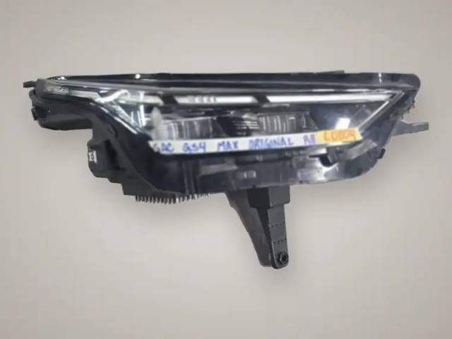

Piezas de carrocería para GAC GS4
17 piezas disponibles hoy para GAC GS4, cada una con su foto y su código: faros y lámparas delanteras (5), flares (2), refuerzos delanteros (2), protectores inferiores (2). Dinos el año de tu carro y te confirmamos si le sirve.
- Garantía de 3 días
- Foto real de cada pieza
- Efectivo, Yappy o ACH
- Lunes a sábado, 8:00 a. m. a 5:00 p. m.
Faros y lámparas delanteras para GAC GS4 5
 035GS4 Max2025 · lado derecho · original
035GS4 Max2025 · lado derecho · original 042GS42022 · lado derecho · original
042GS42022 · lado derecho · original 045GS42022 · lado derecho · original
045GS42022 · lado derecho · original 049GS4 LED2022 · lado derecho · original
049GS4 LED2022 · lado derecho · original
LD004GS4 Max2023-26 · lado derecho · original FL071GS4
FL071GS4 R023GS4
R023GS4 R056GS4 Power
R056GS4 Power PCh019GS4
PCh019GS4 631GS4
631GS4 DT196GS4
DT196GS4 TM053GS4
TM053GS4 LT005GS4
LT005GS4 CH111GS4
CH111GS4 DTI020GS4
DTI020GS4